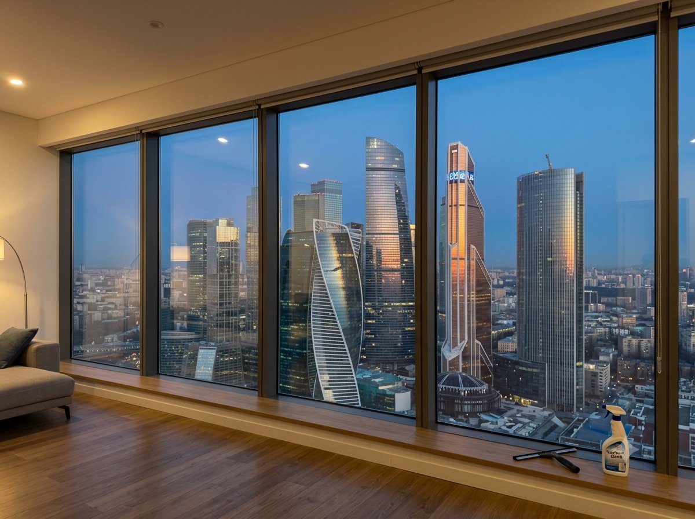

Звоните ежедневно 09:00–00:00+7 (925) 518-63-37
Заказать уборку

Профессионально моем окна любого типа и сложности — от стандартных пластиковых окон в квартире до витражей и остекления на высоте. Итоговая чистота без разводов и подтёков.
Определяем количество и тип окон, степень загрязнения и доступность для работы.
Защищаем подоконники и прилегающие поверхности, подбираем инвентарь и средства.
Удаляем пыль и крупный мусор с рамы, стекла и фурнитуры.
Очищаем пластиковые или деревянные рамы, ручки и уплотнители.
Наносим моющий состав и обрабатываем стекло профессиональным скребком и салфеткой.
Полируем стекло насухо, чтобы не оставалось разводов и подтёков.
Моем подоконник, откосы и, при необходимости, москитную сетку.
Проверяем результат при разном освещении, устраняем оставшиеся разводы.
Используем профессиональные скребки и безворсовые салфетки для идеального результата.
Моем окна в высотных зданиях с использованием альпинистского снаряжения и подъёмных платформ.
Составы не вредят здоровью и не оставляют запаха после обработки.
Моем витражи, балконы, жалюзи, оконные решётки и вентилируемые фасады.
Стоимость известна заранее, без доплат по факту выполнения работ.
| Услуга | Стоимость |
|---|---|
| Одностворчатое окно | от 500 ₽ |
| Двустворчатое окно | от 600 ₽ |
| Трёхстворчатое окно | от 700 ₽ |
| Нестандартные окна | от 750 ₽ |
| Витраж | от 700 ₽ |
| Балкон | от 500 ₽/створка |
| Оконные решётки | от 480 ₽/окно |
| Жалюзи | от 500 ₽/створка |
| Сайдинг | от 730 ₽/балкон |
Внимание! Цены не являются окончательными. Точную стоимость услуг уточняйте у менеджеров компании. Минимальный выезд — от 5 000 ₽.